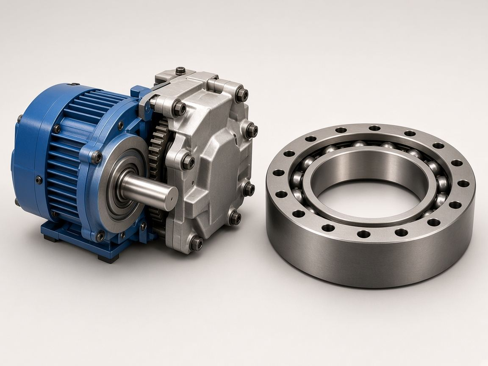
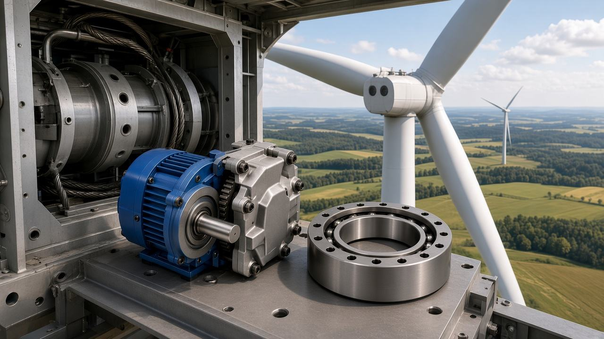

Ветроэнергетика · MRO · редкие компоненты
Запчасти для ветрогенераторов и ветропарков из Китая
Подбираем компоненты трансмиссии, управления, преобразования энергии, метеоконтроля и CMS по модели турбины, номеру детали, фотографии или техническим параметрам.
Преобразователи на этой странице относятся к ветроустановке. Солнечные инверторы, силовые трансформаторы и накопители описаны отдельно и не заменяют узлы ветрогенератора.

Применение
Узлы в гондоле ветроустановки

Высокоприоритетные позиции
Основные группы компонентов ветроустановок
Сначала проверяем дорогостоящие и критичные для простоя узлы, затем датчики, электронику, исполнительные механизмы и вспомогательные компоненты.
Трансмиссия и управление
- Главные редукторы и редукторы поворота гондолы
- Главные контроллеры ветрогенератора и ПЛК
- Ветрогенераторные преобразователи, IGBT и DC-link конденсаторы
- Приводы шага, серводвигатели и редукторы шага
- Абсолютные энкодеры положения лопастей
- Токосъемные кольца и оптоволоконные вращающиеся соединения
Метеодатчики и мониторинг
- Ультразвуковые датчики скорости и направления ветра с подогревом
- Механические анемометры и флюгеры
- Датчики ветра и комплексные метеодатчики
- Датчики обледенения лопастей и гондолы
- CMS-датчики вибрации и терминалы сбора данных
- Датчики состояния масла, наклона башни и деформации лопастей
Поисковые формулировки
Как могут называться нужные позиции
FAQ
Ответы по ветроэнергетике
Какие данные нужны для запроса запчасти ветрогенератора?
Укажите производителя и модель турбины, название узла, номер детали, серийный номер, фото шильдика, количество и город доставки. Для датчиков и электроники также нужны разъемы, питание, интерфейс и диапазон.
Можно ли искать снятые с производства компоненты?
Да. Поиск выполняется по номеру детали, фото, электрическим и механическим параметрам. Возможная замена согласуется только после проверки совместимости.
Какие метеодатчики можно запросить для ветропарка?
Можно запросить ультразвуковые датчики скорости и направления ветра с подогревом, механические чашечные анемометры, флюгеры, датчики обледенения и комплексные метеостанции.
Относятся ли солнечные инверторы к запчастям ветрогенератора?
Нет. Здесь компоненты ветроустановок, включая преобразователь ветрогенератора. Сетевые и гибридные солнечные инверторы описаны на отдельной странице и не заменяют узлы ветрогенератора.
Где подтверждаются цена, срок и наличие?
Yucore Industrial Supply — направление Guangzhou Xiaoyu Import & Export Co., Ltd в Гуанчжоу. По категории «запчасти для ветрогенераторов» цена, срок и наличие подтверждаются только в письменном коммерческом предложении. Заявку отправляют Summer на summer@yucore.ltd или в WhatsApp +86 150 1848 5957. До проверки позиция не считается доступной.
Есть part number или фото детали?
Пришлите данные узла. Цена, срок и наличие подтверждаются только в письменном коммерческом предложении.
Связанные направления